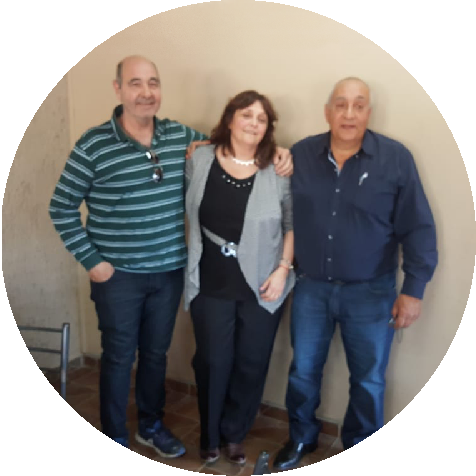
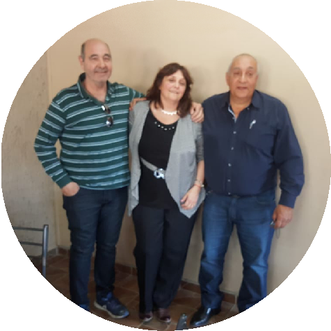

Hace muchos años inmigrantes italianos, amantes del trabajo
agrícola, dejaron fluir sus sueños en nuestra tierra. En el nuevo
milenio nuevas generaciones, seguimos cultivándolos.
Continuando con una trayectoria familiar, la uva de nuestros
viñedos dio a la marca KALIK, vocablo Maya que significa “caminar
juntos por un mismo sendero”, y CASTELFRANCO, una marca que cuenta
historia.
Luego de 10 años el esfuerzo y constancia vieron sus frutos: Una
bodega propia, cuya construcción data de los inicios del 1900, se
convierte ahora en cuna de nuestros productos. Hoy abrimos
nuestras puertas para compartir el fruto de este esfuerzo.
Te contamos nuestra historia
Historia de SMS S.A.
Orígenes de los viñedos Inmigrantes italianos, amantes del
trabajo agrícola, dejaron fluir sus sueños en nuestra tierra. En
1962 compraron 50 hectáreas de terreno inculto en Alto Chapanay
en el departamento de San Martín. En esa época no había
electricidad en esos lugares, por lo que tuvieron que realizar
perforaciones que funcionaban con combustible, gas oil. Dos años
pasaron de labranza en esa tierra virgen para dar vida a la
primer plantación de parrales. Con mucho trabajo en familia en
pocos años lograron tener cubierto de plantación la mitad de
terreno. Así quedaba la “Finquita de los gringos” con parrales
de uvas Criollas y Torrontés Riojano. Con los años y muchas
gestiones se realizó la electrificación de la zona, lo que
permitía tener la posibilidad de tener más terreno regado. El
entusiasmo fue muy grande y el deseo de continuar lo proyectado
permitió que en la década del 90 se plantaran más hectáreas de
Torrontés Riojano con un sistema de galería.
Al pasar los años, la nueva generación familiar apuesta a la
plantación de espalderos con uvas tintas: Tempranillo, Merlot y
Ancellota. Completando así el sueño de tener la totalidad del
terreno cultivado con uvas de distintas variedades.
A lo largo del tiempo se trabaja para busca un rendimiento
equilibrado entre follaje y producción dependiendo de la
variedad. Esto es gracias al cuidado de las plantas, tanto en la
forma de trabajo como en los productos de tipo orgánico
utilizados en curaciones y fertilización.
En la actualidad los viñedos están bajo permanente cuidado, para
evitar su envejecimiento, controlar su calidad, rendimiento y
asegurar la permanencia dentro del circuito productivo.
Orígenes de la bodega:
En el nuevo milenio, habiendo afianzado la primer etapa
productiva y para ingresar al circuito productivo en su
totalidad, se constituye una Sociedad Anónima bajo la Razón
Social SMS S.A. Con la marca KALIK, vocablo Maya que significa
“caminar juntos por un mismo sendero, la empresa sale con sus
vinos al mercado. Con la uva de nuestro viñedo y la nueva marca
la empresa comienza a fraccionar su vino en Bag in Box. Ante la
muy buena respuesta al consumo de nuestros vinos, cada vez era
más necesario un lugar físico para elaborar y fraccionar
nuestros productos.
Alcanzar el objetivo se hizo posible en el año 2017. Alquilamos
una bodega en Los Corralitos Guaymallén. Allí se elaboraban
nuestras uvas de nuestras tierras y la de terceros que
depositaron su confianza, pudiendo así ampliar la gama de
variedades Malbec, Malbec Roble, Cabernet, Clásico
Tempranillo-Merlot y Torrontés Riojano.
Los productos que se trabajan en el mercado interno eran: BIB,
damajuanas, botellas de 750 cc., y en el mercado externo se
vendía a granel y en botellas en EE.UU., Rusia, China.
Del espíritu de innovación siempre latente entre los socios
surge una nueva marca, CASTELFRANCO, para su vino Cosecha
Tardía, Mistela, Oporto y el Espumante elaborado bajo los
métodos Champenoisse y Charmat.
Diez años después, en 2017, con un gran esfuerzo, compramos una
antigua bodega, cuya construcción data de los inicios del 1900.
Nuevamente un desafío, acondicionar la misma para continuar la
tarea. El nuevo establecimiento se encuentra ubicado en calle 2
de Mayo 8426 de Los Corralitos Guaymallén, Mendoza. Consta de
una capacidad de 1.100.000 litros, un equipo de frío de 100.000
frigorías para mejorar la cantidad de los productos.
El turismo vitivinícola es un área de la industria que nos
atrae, por lo que hemos participado en Ferias Departamentales.
El municipio colabora en forma efectiva y permanente acompañando
nuestro nuevo proyecto “Bodega Turística”.